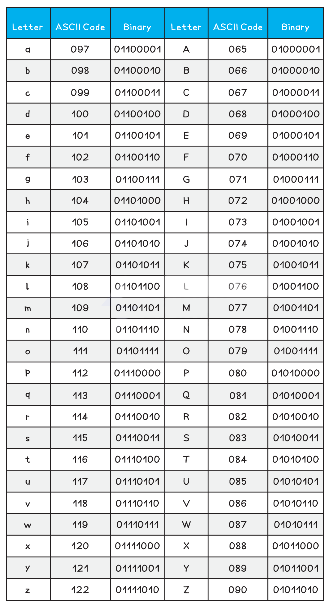
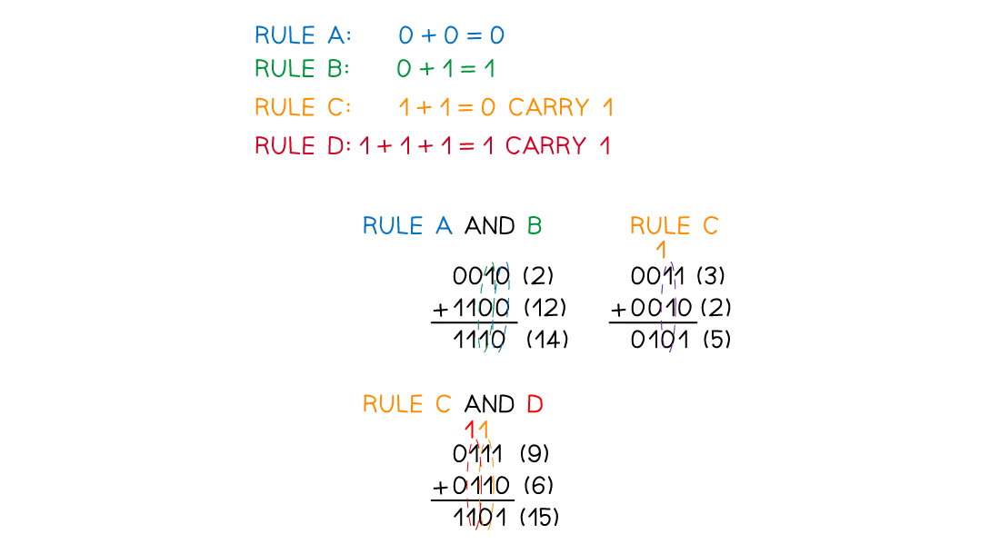

Big Idea 2 — Data (DAT): Review Notes
Syllabus: AP Computer Science Principles — Course and Exam Description, Effective Fall 2020
Exam Weight: 17–22% of AP Exam
Topics: 2.1–2.4
AP Classroom: Topic Questions ~20 multiple-choice
Overview
Big Idea 2 introduces how computing devices represent data internally with bits, and how data can be processed to discover new knowledge. You will learn how data values — numbers, characters, and colors — are stored digitally and how smooth, real-world analog data are closely approximated through sampling, along with the consequences of representing data with a fixed number of bits, such as overflow and round-off error. You will practice converting between binary (base 2) and decimal (base 10), compare data compression algorithms (lossless vs. lossy), and learn how information is extracted from data and from metadata, including the challenges of cleaning data, the limits of a single computer for big data, and the danger of mistaking correlation for causation. Finally, you will see how programs transform, filter, combine, and visualize data to gain insight and knowledge, and why processes must be iterative, interactive, and scalable.
In this big idea you will learn to:
- Explain how data can be represented using bits, and explain the consequences of using bits to represent data (overflow and round-off)
- Calculate the binary (base 2) equivalent of a positive integer (base 10) and vice versa, and compare and order binary numbers
- Compare data compression algorithms to determine which is best in a particular context
- Describe what information can be extracted from data and from metadata, and identify the challenges associated with processing data
- Extract information from data using a program, and explain how programs can be used to gain insight and knowledge from data
-
Practice binary↔decimal conversions until they are automatic. The exam asks you to calculate binary and decimal equivalents and to compare and order binary numbers. Memorize the 8-bit place values (128, 64, 32, 16, 8, 4, 2, 1) and remember that positions are numbered starting at 0 from the right.
-
Know when each type of compression is chosen. Lossless (guarantees complete reconstruction) is chosen when quality or the ability to reconstruct the original is maximally important; lossy (only an approximation, but usually much smaller) is chosen when minimizing data size or transmission time is maximally important. Questions describe a context and ask which algorithm is best.
-
Correlation ≠ causation, and metadata ≠ primary data. A correlation found in data never proves a causal relationship — additional research is needed. Changing or deleting metadata never changes the primary data. Also remember: cleaning data makes it uniform without changing its meaning, and bias is not eliminated by simply collecting more data.
-
Big data = parallel systems + scalability. Large data sets are difficult to process using a single computer and may require parallel systems; the computational capacity of a system affects how data sets can be processed and stored.
Topic 2.1 — Binary Numbers
Key Concepts
Learning Objective [DAT-1.A] — Explain how data can be represented using bits.
解释数据如何用位（bit）表示。核心概念：位是二进制数字（binary digit，0 或 1），字节（byte）为 8 位；数据以数字形式（digital）存储；位分组形成抽象（abstraction），可表示数字、字符、颜色；模拟数据（analog data）通过采样（sampling）近似为数字数据。
- [DAT-1.A.1]: Data values can be stored in variables, lists of items, or standalone constants and can be passed as input to (or output from) procedures.
- [DAT-1.A.2]: Computing devices represent data digitally, meaning that the lowest-level components of any value are bits.
- [DAT-1.A.3]: Bit is shorthand for binary digit and is either 0 or 1.
- [DAT-1.A.4]: A byte is 8 bits.
- [DAT-1.A.5]: Abstraction is the process of reducing complexity by focusing on the main idea. By hiding details irrelevant to the question at hand and bringing together related and useful details, abstraction reduces complexity and allows one to focus on the idea.
- [DAT-1.A.6]: Bits are grouped to represent abstractions. These abstractions include, but are not limited to, numbers, characters, and color.
- [DAT-1.A.7]: The same sequence of bits may represent different types of data in different contexts.
- [DAT-1.A.8]: Analog data have values that change smoothly, rather than in discrete intervals, over time. Some examples of analog data include pitch and volume of music, colors of a painting, or position of a sprinter during a race.
- [DAT-1.A.9]: The use of digital data to approximate real-world analog data is an example of abstraction.
- [DAT-1.A.10]: Analog data can be closely approximated digitally using a sampling technique, which means measuring values of the analog signal at regular intervals called samples. The samples are measured to figure out the exact bits required to store each sample.
Learning Objective [DAT-1.B] — Explain the consequences of using bits to represent data.
解释用位表示数据的后果。核心概念：整数（integer）以固定位数表示会限制取值范围及运算，可能导致溢出（overflow）；实数（real number）以固定位数存储时只能作为近似值（approximation），可能导致舍入误差（round-off error）。
- [DAT-1.B.1]: In many programming languages, integers are represented by a fixed number of bits, which limits the range of integer values and mathematical operations on those values. This limitation can result in overflow or other errors.
- [DAT-1.B.2]: Other programming languages provide an abstraction through which the size of representable integers is limited only by the size of the computer’s memory; this is the case for the language defined in the exam reference sheet.
- [DAT-1.B.3]: In programming languages, the fixed number of bits used to represent real numbers limits the range and mathematical operations on these values; this limitation can result in round-off and other errors. Some real numbers are represented as approximations in computer storage.
⚠️ EXCLUSION STATEMENT (EK DAT-1.B.3): Specific range limitations for real numbers are outside the scope of this course and the AP Exam.

Learning Objective [DAT-1.C] — For binary numbers: a. Calculate the binary (base 2) equivalent of a positive integer (base 10) and vice versa. b. Compare and order binary numbers.
计算二进制（binary，base 2）与十进制（decimal，base 10）正整数的相互转换，并比较、排序二进制数。核心概念：位置记数法——每一位的数值等于该位数字乘以位权（place value），位权为进制（base）的位数次幂，位置从最右侧的第 0 位起依次递增。
- [DAT-1.C.1]: Number bases, including binary and decimal, are used to represent data.
- [DAT-1.C.2]: Binary (base 2) uses only combinations of the digits zero and one.
- [DAT-1.C.3]: Decimal (base 10) uses only combinations of the digits 0–9.
- [DAT-1.C.4]: As with decimal, a digit’s position in the binary sequence determines its numeric value. The numeric value is equal to the bit’s value (0 or 1) multiplied by the place value of its position.
- [DAT-1.C.5]: The place value of each position is determined by the base raised to the power of the position. Positions are numbered starting at the rightmost position with 0 and increasing by 1 for each subsequent position to the left.

Example — Binary ↔ Decimal Conversion and Sampling
Each position in a binary number has a place value equal to 2 raised to the power of the position (positions numbered from 0 at the rightmost bit):
| Bit position (from right) | 7 | 6 | 5 | 4 | 3 | 2 | 1 | 0 |
|---|---|---|---|---|---|---|---|---|
| Place value (2^position) | 128 | 64 | 32 | 16 | 8 | 4 | 2 | 1 |
Decimal → Binary (write 42 as a sum of place values): 42 = 32 + 8 + 2 → the bits for 32, 8, and 2 are 1; the rest are 0 → 101010₂.
Binary → Decimal (101101₂): 1×32 + 0×16 + 1×8 + 1×4 + 0×2 + 1×1 = 32 + 8 + 4 + 1 = 45.
| Decimal | Binary |
|---|---|
| 0 | 0 |
| 1 | 1 |
| 2 | 10 |
| 3 | 11 |
| 4 | 100 |
| 5 | 101 |
| 6 | 110 |
| 7 | 111 |
| 8 | 1000 |
| 9 | 1001 |
| 10 | 1010 |
Sampling an analog signal: analog data (e.g., the volume of a song, the position of a sprinter) change smoothly over time. To store them digitally, a sampling technique measures values of the analog signal at regular intervals called samples, and each sample is stored as bits:
| Time (s) | 0.0 | 0.5 | 1.0 | 1.5 | 2.0 | 2.5 | 3.0 |
|---|---|---|---|---|---|---|---|
| Analog signal value | 0.0 | 0.7 | 1.0 | 0.7 | 0.0 | −0.7 | −1.0 |
| Stored sample (bits) | 0000 | 0110 | 1000 | 0110 | 0000 | 1001 | 1111 |
The stored samples approximate the smooth original; the more samples taken, the closer the approximation. Using digital data to approximate real-world analog data is an example of abstraction (DAT-1.A.9).
(a) Convert each decimal number to binary. [3]
(i) 13
(ii) 42
(iii) 100
(b) Convert each binary number to decimal. [2]
(i) 1011
(ii) 11010
© What is the largest decimal value that can be represented with 4 bits? [1]
📖 参考答案 | Reference Answer
(a) (i) 13 = 8 + 4 + 1 → 1101₂. [1]
(ii) 42 = 32 + 8 + 2 → 101010₂. [1]
(iii) 100 = 64 + 32 + 4 → 1100100₂. [1]
(b) (i) 1011₂ = 1×8 + 0×4 + 1×2 + 1×1 = 8 + 2 + 1 = 11. [1]
(ii) 11010₂ = 1×16 + 1×8 + 0×4 + 1×2 + 0×1 = 16 + 8 + 2 = 26. [1]
© 1111₂ = 8 + 4 + 2 + 1 = 15 — with 4 bits you can represent the values 0 through 15. [1]
(a) Place the following binary numbers in order from smallest to largest. [2]
1011, 1100, 1010, 1111
(b) The binary number 1101 is greater than 1011 even though both use four bits. Explain why, referring to place values in your explanation. [2]
📖 参考答案 | Reference Answer
(a) Smallest to largest: 1010₂, 1011₂, 1100₂, 1111₂ (these are 10, 11, 12, and 15 in decimal). [2]
(b) A digit’s position in the binary sequence determines its numeric value: the numeric value equals the bit’s value (0 or 1) multiplied by the place value of its position (the base, 2, raised to the power of the position). Both numbers have a 1 in the position with place value 8, but in 1101₂ the next bit is 1 (contributing 1×2² = 4) while in 1011₂ it is 0, so 1101₂ (13) > 1011₂ (11). [2]
(a) In many programming languages, integers are represented by a fixed number of bits. What consequence does this have for the range of integer values, and what error can result? [2]
(b) Give a concrete scenario in which overflow could occur. [1]
© Why are some real numbers represented as approximations in computer storage, and what error can this cause? [2]
📖 参考答案 | Reference Answer
(a) Integers are represented by a fixed number of bits, which limits the range of integer values and mathematical operations on those values; this limitation can result in overflow or other errors. [2]
(b) Example: a game score stored in an integer type with a fixed number of bits that increases beyond the largest representable integer value — the result is out of the allowed range and overflow occurs. (Any reasonable scenario is accepted.) [1]
© The fixed number of bits used to represent real numbers limits the range and mathematical operations on these values, so some real numbers are represented as approximations in computer storage; this limitation can result in round-off and other errors. [2]
(a) What is analog data? Give one example. [1]
(b) Describe how analog data can be closely approximated digitally using a sampling technique. [2]
© Why is the use of digital data to approximate real-world analog data considered an example of abstraction? [2]
📖 参考答案 | Reference Answer
(a) Analog data have values that change smoothly, rather than in discrete intervals, over time. Example: the pitch and volume of music, the colors of a painting, or the position of a sprinter during a race. [1]
(b) A sampling technique measures values of the analog signal at regular intervals called samples; the samples are measured to figure out the exact bits required to store each sample, allowing the smooth analog data to be closely approximated digitally. [2]
© Abstraction is the process of reducing complexity by focusing on the main idea and hiding details irrelevant to the question at hand. Representing smoothly changing analog data with discrete digital samples focuses on the essential values and hides the continuous detail, so it is an example of abstraction. [2]
Additional Quiz 2.1 Topics (from Progress Check Quiz 2)
Learning Objective [DAT-1.C-Ext] — Apply additional facts about binary representation: the minimum number of bits needed, ASCII character encoding, hexadecimal notation, and binary arithmetic patterns.
运用关于二进制表示的其他事实：最少所需位数、ASCII 字符编码、十六进制记法和二进制运算规律。核心概念：表示 N 个不同值至少需要满足 2ⁿ ≥ N 的 n 位（每增加 1 位，可表示的值数量翻倍）；ASCII 用 7 位编码字符（‘A’ = 65）；十六进制（hexadecimal，base 16）每位对应恰好 4 位二进制；二进制数末尾补 n 个 0 使数值乘以 2ⁿ。
- [Quiz2-Ext1]: The minimum number of bits needed to represent N distinct values is the smallest n such that 2ⁿ ≥ N (n bits can represent 2ⁿ different values). Each additional bit doubles the number of representable values — adding 1 bit doubles the range — so going from 32 bits to 64 bits multiplies the number of representable values by 2³².
- [Quiz2-Ext2]: Bits are grouped to represent characters as well as numbers (DAT-1.A.6). ASCII encodes characters using 7 bits per character; decimal values 65–90 correspond to the letters A–Z (for example, the character ‘A’ is 65, or 01000001₂). The same bit pattern may represent a character in one context and a number in another (DAT-1.A.7).
- [Quiz2-Ext3]: Hexadecimal (base 16) uses the digits 0–9 and the letters A–F. Because 16 = 2⁴, each hexadecimal digit corresponds to exactly 4 bits, so binary and hexadecimal convert quickly by grouping the binary digits into sets of 4 from the right (e.g., 0100 0001₂ = 41₁₆, which is also the hex code for the ASCII character ‘A’).
- [Quiz2-Ext4]: Binary numbers follow the same arithmetic rules as decimal: adding 1 to a binary number increments its value by 1; appending n zeros to the right of a binary number multiplies its value by 2ⁿ (e.g., appending three zeros multiplies the value by 2³ = 8).
Example — Minimum Bits, ASCII, Hexadecimal, and Binary Arithmetic
Minimum bits: 3 bits represent 2³ = 8 values (000–111); 4 bits represent 2⁴ = 16 values. To represent 100 values you need 7 bits, since 2⁶ = 64 < 100 and 2⁷ = 128 ≥ 100.
ASCII character encoding: ‘A’ = 65 = 01000001₂, ‘B’ = 66, …, ‘Z’ = 90. The bit pattern 01000001 01000010 read as ASCII text is “AB”.

Hexadecimal:
| Hex digit | Binary (4 bits) | Hex digit | Binary (4 bits) |
|---|---|---|---|
| 0 | 0000 | 8 | 1000 |
| 1 | 0001 | 9 | 1001 |
| 2 | 0010 | A | 1010 |
| 3 | 0011 | B | 1011 |
| 4 | 0100 | C | 1100 |
| 5 | 0101 | D | 1101 |
| 6 | 0110 | E | 1110 |
| 7 | 0111 | F | 1111 |
Binary → hex: split into groups of 4 bits from the right: 0100 0001₂ = 41₁₆. Hex → binary: expand each digit to its 4 bits: A3₁₆ = 1010 0011₂ = 10100011₂.
Binary arithmetic: counting up in binary is just adding 1 (0, 1, 10, 11, 100, 101, …). Appending zeros multiplies by powers of 2: 10₂ (2) → 10000₂ (16) after four zeros, a factor of 2⁴ = 16.

(a) What is the minimum number of bits needed to represent 100 distinct values? Show how you know. [2]
(b) A computer uses 32-bit integers; a newer one uses 64-bit integers. How many times more values can the 64-bit integer represent? [1]
© Explain why adding 1 bit to a binary representation doubles the number of distinct values. [2]
📖 参考答案 | Reference Answer
(a) 7 bits — n bits represent 2ⁿ values, and 7 is the smallest n with 2ⁿ ≥ 100 (2⁶ = 64 < 100, 2⁷ = 128 ≥ 100). [2]
(b) 2³² times more — each additional bit doubles the number of representable values, so going from 32 to 64 bits multiplies by 2³². [1]
© Each bit can independently be 0 or 1, so every value that fits in n bits has two versions in n+1 bits — one with the new bit set to 0 and one with it set to 1. Thus n+1 bits represent exactly 2 × 2ⁿ = 2ⁿ⁺¹ values. [2]
(a) How many bits does ASCII use per character, and which decimal values correspond to A–Z? [2]
(b) The character ‘A’ is 65 in decimal (01000001₂). What is the decimal value of ‘C’? [1]
© Interpreted as ASCII text, what two characters do the bit patterns 01000001 and 01000010 represent? [1]
📖 参考答案 | Reference Answer
(a) ASCII uses 7 bits per character; decimal values 65–90 correspond to the letters A–Z. [2]
(b) 67 — the letters are consecutive, so ‘C’ = ‘A’ + 2 = 65 + 2. [1]
© 01000001₂ = 65 = ‘A’ and 01000010₂ = 66 = ‘B’, so the patterns represent the text “AB”. [1]
(a) Which digits does hexadecimal (base 16) use, and why is conversion between binary and hexadecimal so fast? [2]
(b) Convert 0100 0001₂ to hexadecimal, and state which ASCII character this hex value represents. [2]
© Convert A3₁₆ to binary. [2]
📖 参考答案 | Reference Answer
(a) Hexadecimal uses the digits 0–9 and the letters A–F. Conversion is fast because each hex digit corresponds to exactly 4 bits (16 = 2⁴), so you simply group the binary digits into sets of 4 from the right. [2]
(b) 0100 0001₂ = 41₁₆ (0100 = 4, 0001 = 1); 41₁₆ is the hex code for the ASCII character ‘A’ (65 decimal). [2]
© A = 1010, 3 = 0011 → A3₁₆ = 10100011₂. [2]
(a) The binary number 1011₂ is incremented by 1. What is the result? [1]
(b) What happens to the value of a binary number when three zeros are appended to its right end? Give a decimal example. [2]
© Starting from 1, list the next three binary numbers in counting order. [1]
📖 参考答案 | Reference Answer
(a) 1011₂ + 1 = 1100₂. [1]
(b) Appending n zeros multiplies the value by 2ⁿ, so appending three zeros multiplies it by 2³ = 8. Example: 10₂ (2) → 10000₂ (16), and 16 = 2 × 8. [2]
© 10₂, 11₂, 100₂ (2, 3, 4 in decimal). [1]
Topic 2.2 — Data Compression
Key Concepts
Learning Objective [DAT-1.D] — Compare data compression algorithms to determine which is best in a particular context.
比较数据压缩（compression）算法，判断在特定情境下哪种最优。核心概念：压缩可减少存储或传输的位数，但更少的位不一定意味着更少的信息；压缩幅度取决于数据的冗余度（redundancy）与所用算法；无损压缩（lossless）保证完整重建原数据，有损压缩（lossy）只允许重建近似数据但通常压缩率更高；重质量或重建能力时选无损，重减小体积或传输时间时选有损。
- [DAT-1.D.1]: Data compression can reduce the size (number of bits) of transmitted or stored data.
- [DAT-1.D.2]: Fewer bits does not necessarily mean less information.
- [DAT-1.D.3]: The amount of size reduction from compression depends on both the amount of redundancy in the original data representation and the compression algorithm applied.
- [DAT-1.D.4]: Lossless data compression algorithms can usually reduce the number of bits stored or transmitted while guaranteeing complete reconstruction of the original data.
- [DAT-1.D.5]: Lossy data compression algorithms can significantly reduce the number of bits stored or transmitted but only allow reconstruction of an approximation of the original data.
- [DAT-1.D.6]: Lossy data compression algorithms can usually reduce the number of bits stored or transmitted more than lossless compression algorithms.
- [DAT-1.D.7]: In situations where quality or ability to reconstruct the original is maximally important, lossless compression algorithms are typically chosen.
- [DAT-1.D.8]: In situations where minimizing data size or transmission time is maximally important, lossy compression algorithms are typically chosen.
Example — Lossless vs. Lossy Compression
| Lossless Compression | Lossy Compression | |
|---|---|---|
| Reconstruction | Guarantees complete reconstruction of the original data | Only an approximation of the original data |
| Typical bit reduction | Usually reduces bits | Can significantly reduce bits — usually more than lossless |
| Chosen when | Quality or ability to reconstruct the original is maximally important | Minimizing data size or transmission time is maximally important |
| Examples | ZIP files, PNG images, text/software | JPEG images, MP3 audio, streaming video |
(a) Define lossless data compression and state what it guarantees. [2]
(b) Define lossy data compression and state what it allows. [2]
📖 参考答案 | Reference Answer
(a) Lossless data compression algorithms can usually reduce the number of bits stored or transmitted while guaranteeing complete reconstruction of the original data. [2]
(b) Lossy data compression algorithms can significantly reduce the number of bits stored or transmitted but only allow reconstruction of an approximation of the original data. [2]
For each scenario, state whether lossless or lossy compression is typically chosen and justify your choice.
(a) A bank compressing a database of account records that must be reconstructed exactly. [2]
(b) A video streaming service compressing movie files so they transmit faster over the internet. [2]
© A doctor storing medical scan images that must be examined pixel by pixel. [2]
📖 参考答案 | Reference Answer
(a) Lossless — in situations where the ability to reconstruct the original is maximally important, lossless compression algorithms are typically chosen; the records must be reconstructed exactly. [2]
(b) Lossy — in situations where minimizing data size or transmission time is maximally important, lossy compression algorithms are typically chosen, and they can usually reduce the number of bits more than lossless algorithms. [2]
© Lossless — the ability to reconstruct the original image completely is maximally important for accurate examination, so lossless compression is chosen. [2]
(a) Data compression can reduce the size (number of bits) of transmitted or stored data, but “fewer bits does not necessarily mean less information.” Explain what this statement means. [2]
(b) On what does the amount of size reduction from compression depend? [2]
📖 参考答案 | Reference Answer
(a) The amount of information is not measured simply by the number of bits. Compression works by removing redundancy — repeated or predictable patterns in the original representation — so a compressed representation can carry the same information using fewer bits. [2]
(b) The amount of size reduction depends on both the amount of redundancy in the original data representation and the compression algorithm applied. [2]
Additional Quiz 2.2 Topic (from Progress Check Quiz 2)
Learning Objective [DAT-1.D-Ext] — Explain how a named lossless compression algorithm, byte pair encoding, works.
解释一种指定的无损压缩算法——字节对编码（byte pair encoding）的工作原理。核心概念：反复找出数据中出现频率最高的相邻字节对，用一个数据中未出现的新符号整体替换，并在映射表（mapping table）中记录每次替换；因为所有替换都有记录，可以逆向完全重建原数据，因此它是无损（lossless）的。
- [Quiz2-Ext5]: Byte pair encoding is a named compression algorithm. It repeatedly finds the most frequent adjacent pair of bytes (or characters) in the data, replaces every occurrence with a single new symbol that does not already appear in the data, and records each replacement in a mapping table. Because every replacement is recorded in the table, the original data can be completely reconstructed by reversing the replacements — so byte pair encoding is lossless. The amount of compression depends on the redundancy in the data (DAT-1.D.3): data with many repeated patterns compress well, while data with little or no redundancy compress poorly.
Example — Byte Pair Encoding
Original text: ababacac (8 characters)
- Count adjacent pairs. “ab”, “ba”, and “ac” each appear twice — tie broken by picking “ab”.
- Replace every “ab” with the new symbol X:
ababacac→XXacac(6 characters). Record X → “ab”. - Count again. “ac” now appears twice. Replace every “ac” with Y:
XXacac→XXYY(4 characters). Record Y → “ac”.
Mapping table: X → “ab”, Y → “ac”
Restoring: apply the mappings in reverse order — XXYY → ab ab ac ac → ababacac, the exact original. Because the original is fully recoverable, byte pair encoding is lossless.
(a) Is byte pair encoding lossless or lossy? Justify your answer. [2]
(b) The text “ababab” is compressed with byte pair encoding. Describe the steps and give the compressed result. [2]
© Data with almost no redundancy are compressed with byte pair encoding. What happens, and why? [1]
📖 参考答案 | Reference Answer
(a) Lossless — byte pair encoding records every replacement it makes in a mapping table, so the original data can be completely reconstructed by reversing the replacements. [2]
(b) The pair “ab” is the most frequent adjacent pair (appears 3 times). Replace every “ab” with the new symbol X: ababab → XXX. Compressed result: “XXX” with mapping X → “ab”. [2]
© Little or no size reduction — compression works by removing redundancy, and data with no repeated patterns contain nothing to compress. [1]
Topic 2.3 — Extracting Information from Data
Key Concepts
Learning Objective [DAT-2.A] — Describe what information can be extracted from data.
描述可以从数据（data）中提取哪些信息。核心概念：信息是从数据中提取的事实与模式（patterns）；数据可用于识别趋势、建立联系和解决问题；数据中出现的相关性（correlation）并不必然表明存在因果关系（causation），需要进一步研究；单一数据源常常不足，可能需要合并多个来源的数据才能得出结论。
- [DAT-2.A.1]: Information is the collection of facts and patterns extracted from data.
- [DAT-2.A.2]: Data provide opportunities for identifying trends, making connections, and addressing problems.
- [DAT-2.A.3]: Digitally processed data may show correlation between variables. A correlation found in data does not necessarily indicate that a causal relationship exists. Additional research is needed to understand the exact nature of the relationship.
- [DAT-2.A.4]: Often, a single source does not contain the data needed to draw a conclusion. It may be necessary to combine data from a variety of sources to formulate a conclusion.
Learning Objective [DAT-2.B] — Describe what information can be extracted from metadata.
描述可以从元数据（metadata）中提取哪些信息。核心概念：元数据是关于数据的数据（data about data），例如图片的创建日期或文件大小；修改或删除元数据不会改变主数据（primary data）；元数据用于查找、组织和管理信息，能通过提供附加信息提高数据的有效使用，并使数据得以结构化组织。
- [DAT-2.B.1]: Metadata are data about data. For example, the piece of data may be an image, while the metadata may include the date of creation or the file size of the image.
- [DAT-2.B.2]: Changes and deletions made to metadata do not change the primary data.
- [DAT-2.B.3]: Metadata are used for finding, organizing, and managing information.
- [DAT-2.B.4]: Metadata can increase the effective use of data or data sets by providing additional information.
- [DAT-2.B.5]: Metadata allow data to be structured and organized.
Learning Objective [DAT-2.C] — Identify the challenges associated with processing data.
识别处理数据所面临的挑战。核心概念：处理数据的能力取决于用户及其工具；无论数据规模大小都存在清理、不完整、无效、合并数据源等挑战；数据清理（cleaning）使数据统一而不改变其含义；偏差（bias）常由数据收集的类型或来源造成，多收集数据并不能消除偏差；数据规模影响可提取的信息量，大数据（big data）单台计算机难以处理、可能需要并行系统（parallel systems），且必须考虑系统的可扩展性（scalability）。
- [DAT-2.C.1]: The ability to process data depends on the capabilities of the users and their tools.
- [DAT-2.C.2]: Data sets pose challenges regardless of size, such as: the need to clean data; incomplete data; invalid data; the need to combine data sources.
- [DAT-2.C.3]: Depending on how data were collected, they may not be uniform. For example, if users enter data into an open field, the way they choose to abbreviate, spell, or capitalize something may vary from user to user.
- [DAT-2.C.4]: Cleaning data is a process that makes the data uniform without changing their meaning (e.g., replacing all equivalent abbreviations, spellings, and capitalizations with the same word).
- [DAT-2.C.5]: Problems of bias are often created by the type or source of data being collected. Bias is not eliminated by simply collecting more data.
- [DAT-2.C.6]: The size of a data set affects the amount of information that can be extracted from it.
- [DAT-2.C.7]: Large data sets are difficult to process using a single computer and may require parallel systems.
- [DAT-2.C.8]: Scalability of systems is an important consideration when working with data sets, as the computational capacity of a system affects how data sets can be processed and stored.
Example — Data vs. Metadata, and Cleaning Data
Metadata are data about data. For a photo, the primary data is the image itself; the metadata describes it:
| Primary data | Metadata (data about data) |
|---|---|
| The image (the pixel data) | Date of creation, file size, camera model, GPS location, author |
Deleting or editing the metadata does not change the image itself (DAT-2.B.2). Metadata are used for finding, organizing, and managing information (DAT-2.B.3).
Cleaning data makes it uniform without changing meaning:
| Raw entries from an open field | After cleaning (uniform) |
|---|---|
| “St.”, “st.”, “Street”, “street” | Street |
| “USA”, “U.S.A”, “us”, “United States” | United States |
| “AP CSP”, “apcsp”, “Ap csp” | AP CSP |
(a) What is information, in the context of data? [1]
(b) A data set shows that ice cream sales and drowning incidents both rise in summer and are strongly correlated. Can you conclude that buying ice cream causes drowning? Explain. [2]
© A single data source does not contain the data needed to draw a conclusion. What may be necessary? [2]
📖 参考答案 | Reference Answer
(a) Information is the collection of facts and patterns extracted from data. [1]
(b) No. Digitally processed data may show correlation between variables, but a correlation found in data does not necessarily indicate that a causal relationship exists; additional research is needed to understand the exact nature of the relationship. (Here both variables are likely related to warm summer weather rather than to each other.) [2]
© It may be necessary to combine data from a variety of sources to formulate a conclusion. [2]
(a) Define metadata and give an example involving an image. [2]
(b) A user deletes all the metadata from a photo. Does the primary data change? Explain. [1]
© State two ways metadata are used. [2]
📖 参考答案 | Reference Answer
(a) Metadata are data about data. For example, the piece of data may be an image, while the metadata may include the date of creation or the file size of the image. [2]
(b) No — changes and deletions made to metadata do not change the primary data (the image itself remains unchanged). [1]
© Metadata are used for finding, organizing, and managing information; metadata can increase the effective use of data by providing additional information; and metadata allow data to be structured and organized. (Any two are accepted.) [2]
(a) Why might data collected from users not be uniform, and what is cleaning data? [2]
(b) True or False: Bias in data is eliminated by simply collecting more data. Explain. [2]
© Why are large data sets difficult to process using a single computer, and what may be required? [1]
(d) What is scalability, and why is it an important consideration when working with data sets? [1]
📖 参考答案 | Reference Answer
(a) Depending on how data were collected, they may not be uniform — for example, if users enter data into an open field, the way they choose to abbreviate, spell, or capitalize something may vary from user to user. Cleaning data is a process that makes the data uniform without changing their meaning (e.g., replacing all equivalent abbreviations, spellings, and capitalizations with the same word). [2]
(b) False — problems of bias are often created by the type or source of data being collected, and bias is not eliminated by simply collecting more data. [2]
© Large data sets are difficult to process using a single computer and may require parallel systems. [1]
(d) Scalability of systems is an important consideration when working with data sets, as the computational capacity of a system affects how data sets can be processed and stored. [1]
Additional Quiz 2.3 Topics (from Progress Check Quiz 2)
Learning Objective [DAT-2.C-Ext] — Identify further challenges and trade-offs when combining, analyzing, and storing data: unique identifiers, unrecorded data, scaling operation costs, and privacy.
识别合并、分析和存储数据时更进一步的挑战与权衡：唯一标识符、未记录数据、运算成本随规模增长以及隐私。核心概念：合并数据需要唯一标识符（unique identifier）或连接键（join key），否则同名记录可能错配；数据库只记录实际发生的事，未记录的数据无法被推断，聚合数据（aggregate data）会隐藏个体值；不同操作的成本随数据规模增长的速率不同；存储用户访问数据的副本可加速处理并支持个性化，但带来隐私（privacy）权衡。
- [Quiz2-Ext6]: Combining data from multiple sources requires a common field or unique identifier (a “join key”) to link records correctly. If the data sets are joined only on a non-unique field — for example, two schools’ student records are matched on students’ names — records can be mismatched, such as two students with the same name being confused with each other. Joining multiple tables step by step on their shared IDs lets a program combine all the data (for example, linking a student table, a course table, and an email table to send each student a targeted email).
- [Quiz2-Ext7]: A database records only what actually happened, so it cannot be used to infer things that were never recorded. If the only record is a log of books that were borrowed, the number of books that were never borrowed cannot be determined from it, because such books have no entries in the log. Aggregate data hide individual values: from the average score you cannot determine the highest score, and from a total you cannot recover any individual value.
- [Quiz2-Ext8]: Different operations grow in cost at different rates as data scale. In a database of 100,000 customers, operations that must examine or compare many (or all) records — such as sorting all customers or finding a maximum — take far longer than operations that touch a single record, such as looking up one customer. Operations that process the whole data set (backup, deletion, sorting) scale with the data set’s size; the computational capacity of a system affects how data sets can be processed and stored (DAT-2.C.8).
- [Quiz2-Ext9]: Storing a copy of users’ access data (for example, logging every page a user visits) can speed up later processing and allow personalization, but it creates a privacy trade-off: the stored copies can be analyzed, leaked, or used for purposes the user did not consent to. Storing more data about people always raises the stakes of a privacy violation.
Example — Combining Data, Unrecorded Data, and Scaling Costs
Joining data with a unique ID: a school links its student table to a course table using student ID:
| Student ID (join key) | Name | Course (from course table) |
|---|---|---|
| S001 | Ana | Biology |
| S002 | Ben | History |
Matching only on names would fail if two students are both called “Ben”: their courses could be swapped. With a unique ID, each student is linked to exactly their own records, so a targeted email can combine name, course, and email address across tables.
Unrecorded data cannot be inferred: a borrow log contains only entries for books that were borrowed; it tells you nothing about books that were never borrowed. If you know a class average is 80, you cannot determine the highest score — the average hides the individual values.
Scaling costs differ by operation: with 100,000 customer records, looking up one customer touches one record; sorting all 100,000 must compare records throughout the data set. As the data set grows, whole-data operations (backup, delete, sort) grow much more expensive than single-record operations.
(a) Why is a unique identifier (join key) needed when combining data from multiple sources? [2]
(b) Two schools join their student records using only students’ names. What problem may result? [1]
© A program links a student table, a course table, and an email table by student ID, then sends each student a targeted email. Explain how the joins make this possible. [2]
📖 参考答案 | Reference Answer
(a) Data from multiple sources can only be linked by a common field or unique identifier; without a shared unique ID, records cannot be matched correctly. [2]
(b) Two students with the same name would be confused with each other — records get mismatched (for example, the wrong course or score attached to a student). [1]
© Student ID appears in all three tables, so the program can match each student’s record to exactly that student’s course and email address; joining the tables step by step on the shared ID lets the program draw on data from all the tables when composing the email. [2]
(a) A library keeps only a log of every book borrowed. Can the library determine how many books were never borrowed? Explain. [2]
(b) A teacher knows the average score of a class but not the individual scores. Can the teacher determine the highest score? Explain. [1]
© From aggregate data such as a total or an average, which individual values can be recovered? [2]
📖 参考答案 | Reference Answer
(a) No — the log records only what actually happened (borrowings). A book that was never borrowed has no entry in the log, so the log contains no information about books that were never borrowed. [2]
(b) No — aggregate data hide the individual values; the highest score cannot be recovered from the average alone. [1]
© None — the data record only what happened, and aggregates such as a total or an average cannot be decomposed back into individual values. [2]
(a) In a database of 100,000 customer records, looking up a single customer takes much less time than sorting all 100,000 records. Why? [2]
(b) As a data set grows, which of the following operations grows more expensive with the data size: backing up the data, deleting the data, sorting the data? [2]
© What does the computational capacity of a system affect? [1]
📖 参考答案 | Reference Answer
(a) Looking up a single record touches only one record, while sorting must examine and compare many (or all) of the records — the cost of different operations grows at different rates as the data set scales. [2]
(b) All of them — backup, deletion, and sorting each process the whole data set, so their cost grows with its size. [2]
© The computational capacity of a system affects how data sets can be processed and stored. [1]
(a) What is one benefit of a company storing a copy of its users’ access (visit) data? [1]
(b) What privacy concern does storing such copies raise? [2]
© Give one way stored copies of user data could be used in a way the user did not consent to. [1]
📖 参考答案 | Reference Answer
(a) Storing copies of access data can speed up later processing, such as personalization or making recommendations. [1]
(b) The stored copies can be analyzed, leaked, or used for purposes the user did not consent to — storing data about people always creates a risk that private information is exposed or misused. [2]
© Example: selling browsing history to advertisers, or a data breach exposing the stored records. (Any reasonable answer is accepted.) [1]
Topic 2.4 — Using Programs with Data
Key Concepts
Learning Objective [DAT-2.D] — Extract information from data using a program.
使用程序（program）从数据中提取信息。核心概念：程序可用于处理数据以获取信息；变换（transforming，如把列表中每个元素加倍）、筛选（filtering，如只保留正数）、合并或比较数据（combining/comparing）、可视化（visualizing）都是从数据中提取或修改信息的处理过程；表格、图表等可视化工具、搜索工具以及电子表格（spreadsheet）程序有助于高效地组织并发现信息中的趋势。
- [DAT-2.D.1]: Programs can be used to process data to acquire information.
- [DAT-2.D.2]: Tables, diagrams, text, and other visual tools can be used to communicate insight and knowledge gained from data.
- [DAT-2.D.3]: Search tools are useful for efficiently finding information.
- [DAT-2.D.4]: Data filtering systems are important tools for finding information and recognizing patterns in data.
- [DAT-2.D.5]: Programs such as spreadsheets help efficiently organize and find trends in information.
- [DAT-2.D.6]: Some processes that can be used to extract or modify information from data include the following: transforming every element of a data set, such as doubling every element in a list, or adding a parent’s email to every student record; filtering a data set, such as keeping only the positive numbers from a list, or keeping only students who signed up for band from a record of all the students; combining or comparing data in some way, such as adding up a list of numbers, or finding the student who has the highest GPA; visualizing a data set through a chart, graph, or other visual representation.
Learning Objective [DAT-2.E] — Explain how programs can be used to gain insight and knowledge from data.
解释程序如何被用于从数据中获得洞察（insight）与知识。核心概念：处理信息时程序以迭代（iterative）和交互（interactive）的方式使用；程序员可用程序筛选和清理数字数据，通过合并数据源、聚类（clustering）和分类（classifying）数据来获得洞察；翻译和变换数字表示的信息也能产生洞察；数据经程序变换后可能浮现出模式（patterns）。
- [DAT-2.E.1]: Programs are used in an iterative and interactive way when processing information to allow users to gain insight and knowledge about data.
- [DAT-2.E.2]: Programmers can use programs to filter and clean digital data, thereby gaining insight and knowledge.
- [DAT-2.E.3]: Combining data sources, clustering data, and classifying data are parts of the process of using programs to gain insight and knowledge from data.
- [DAT-2.E.4]: Insight and knowledge can be obtained from translating and transforming digitally represented information.
- [DAT-2.E.5]: Patterns can emerge when data are transformed using programs.
Example — Pseudocode for Transforming, Filtering, and Combining Data
Transforming every element of a data set — doubling every element in a list:
temps ← [10, 20, 30]
FOR EACH index i FROM 0 TO LENGTH(temps) - 1
temps[i] ← temps[i] * 2
// temps is now [20, 40, 60]
Filtering a data set — keeping only the positive numbers from a list:
nums ← [3, -1, 7, -5, 2]
positives ← []
FOR EACH n IN nums
IF n > 0
APPEND n TO positives
// positives is now [3, 7, 2]
Combining — adding up a list of numbers, or finding the student with the highest GPA. Visualizing — showing the data through a chart, graph, or other visual representation.
(a) Write pseudocode (or describe the steps) that filters a list of student records, keeping only the students who signed up for band. [2]
(b) Doubling every element in a list is an example of transforming a data set. Give another example of transforming every element of a data set. [1]
© Give one example of (i) combining or comparing data, and (ii) visualizing a data set. [2]
📖 参考答案 | Reference Answer
(a) Example:
records ← list of all students (each record has a "band" field)
result ← []
FOR EACH student IN records
IF student.band = true
APPEND student TO result
Any reasonable step-by-step description that keeps only the students who signed up for band is accepted. [2]
(b) Example: adding a parent’s email to every student record. (Any equivalent transform of every element is accepted.) [1]
© (i) Combining/comparing: adding up a list of numbers, or finding the student who has the highest GPA. (ii) Visualizing: showing a data set through a chart, graph, or other visual representation. [2]
(a) In what way are programs used when processing information to allow users to gain insight and knowledge about data? [1]
(b) State two parts of the process of using programs to gain insight and knowledge from data. [1]
© How can patterns emerge in data, and what tools help communicate the insight gained? [2]
📖 参考答案 | Reference Answer
(a) Programs are used in an iterative and interactive way when processing information to allow users to gain insight and knowledge about data. [1]
(b) Combining data sources, clustering data, and classifying data are parts of the process of using programs to gain insight and knowledge from data. (Any two are accepted.) [1]
© Patterns can emerge when data are transformed using programs; tables, diagrams, text, and other visual tools can be used to communicate insight and knowledge gained from data. [2]
(a) Why are search tools and data filtering systems useful when working with data? [2]
(b) What do programs such as spreadsheets help you do? [1]
© A student adds up all the numbers in a spreadsheet column and then creates a graph of the totals. Identify the two processes from the course that are being applied. [1]
📖 参考答案 | Reference Answer
(a) Search tools are useful for efficiently finding information; data filtering systems are important tools for finding information and recognizing patterns in data. [2]
(b) Programs such as spreadsheets help efficiently organize and find trends in information. [1]
© Combining data in some way (adding up a list of numbers) and visualizing a data set through a chart or graph. [1]
Additional Quiz 2.4 Topics (from Progress Check Quiz 2)
Learning Objective [DAT-2.D-Ext] — Interpret charts and graphs, extrapolate trends, and use Boolean filter expressions to extract information from data.
解读图表（charts and graphs）、外推趋势，并使用布尔（Boolean）过滤表达式从数据中提取信息。核心概念：图表可传达从数据中获得的洞察——折线图可显示恒定增长率（直线）或指数增长（曲线越来越陡），饼图显示各类别所占比例，过去数据的线性趋势可外推（extrapolate）以估计未来值；数据过滤系统常用布尔逻辑条件组合：AND 条件需每个子条件都为真，OR 条件满足任一子条件即可保留记录。
- [Quiz2-Ext10]: Charts and graphs communicate insight and knowledge gained from data (DAT-2.D.2), and reading them requires interpreting the growth or proportion shown. A line graph can show a constant rate of increase (a straight line) or exponential growth such as a value that doubles each interval (an increasingly steep curve); a pie chart shows what fraction of the whole each category represents; a linear trend in past data can be extended (extrapolated) to estimate a future value. Patterns can emerge when data are transformed using programs (DAT-2.E.5).
- [Quiz2-Ext11]: Data filtering systems (DAT-2.D.4) often use Boolean (logical) conditions to keep only records that match a compound requirement. In an AND condition every sub-condition must be true for the record to be kept (e.g., genre = “mystery” AND pages ≥ 100 AND cost < 10); in an OR condition the record is kept when any sub-condition is true. A single record fails an AND filter as soon as one condition fails.
Example — Reading Charts and Boolean Filters
Growth shown by a line graph:
| Year | 2020 | 2021 | 2022 | 2023 |
|---|---|---|---|---|
| Constant rate (linear) | 100 | 120 | 140 | 160 |
| Doubling (exponential) | 100 | 200 | 400 | 800 |
The first row plots as a straight line — a constant rate of increase. The second row plots as a curve that gets steeper — the value doubles each interval. A linear trend can be extrapolated: if the first row’s pattern continues, 2024 ≈ 180.
Boolean filter conditions: keeping mystery books that are long and cheap:
genre = "mystery" AND pages ≥ 100 AND cost < 10
- Record 1: mystery, 150 pages, $12 → rejected (fails cost < 10).
- Record 2: mystery, 250 pages, $8 → kept (passes all three conditions).
- Record 3: romance, 120 pages, $6 → rejected (fails genre = “mystery”).
(a) A line graph shows a value that doubles every year (100, 200, 400, 800). Describe the shape of the graph and the growth rate. [2]
(b) A company’s sales increase by a constant amount each month, plotting as a straight line. If sales were 50, 60, and 70 in the first three months, extrapolate the sales for month 4. [1]
© In a pie chart, the slice labeled “Science” occupies one quarter of the chart. What fraction of students chose Science? [1]
(d) What does a linear trend in past data allow you to estimate? [1]
📖 参考答案 | Reference Answer
(a) The graph is a curve that gets steeper over time — the value grows exponentially (it doubles each interval) rather than at a constant rate. [2]
(b) 80 — the constant increase is +10 per month (50 → 60 → 70), so month 4 ≈ 70 + 10 = 80. [1]
© One quarter — 25% of the students. [1]
(d) A future value beyond the measured data, by extending the trend (extrapolation). [1]
(a) The filter genre = “mystery” AND pages ≥ 100 AND cost < 10 is applied to a library catalog. Which record is kept, and why? [2]
-
Record 1: mystery, 150 pages, $12
-
Record 2: mystery, 250 pages, $8
-
Record 3: romance, 120 pages, $6
(b) Write a Boolean filter that keeps a book if it is a mystery OR has fewer than 50 pages. [2]
© A record passes an AND filter only when ______. Complete the sentence. [1]
📖 参考答案 | Reference Answer
(a) Record 2 — it satisfies all three AND conditions. Record 1 fails cost < 10 ($12), and Record 3 fails genre = “mystery”. [2]
(b) genre = "mystery" OR pages < 50 — with an OR condition, the record is kept when any sub-condition is true. [2]
© … every one of the conditions joined by AND is true. [1]